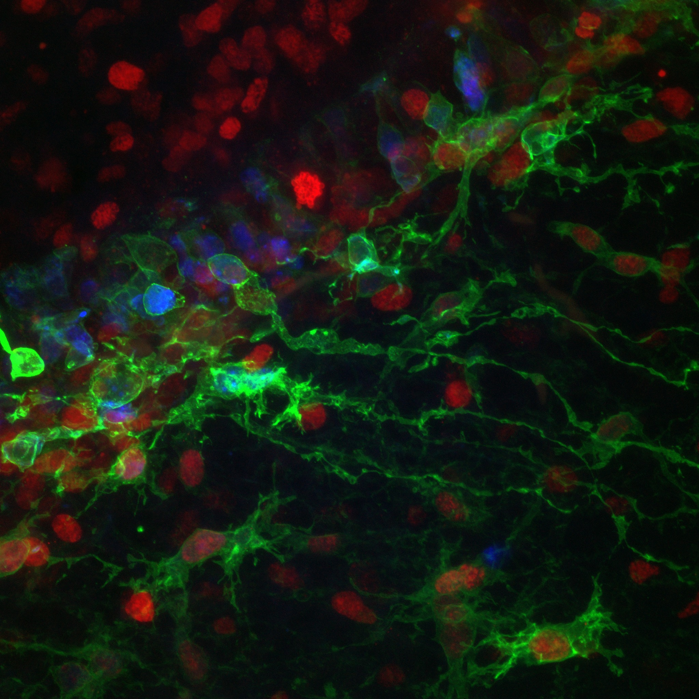
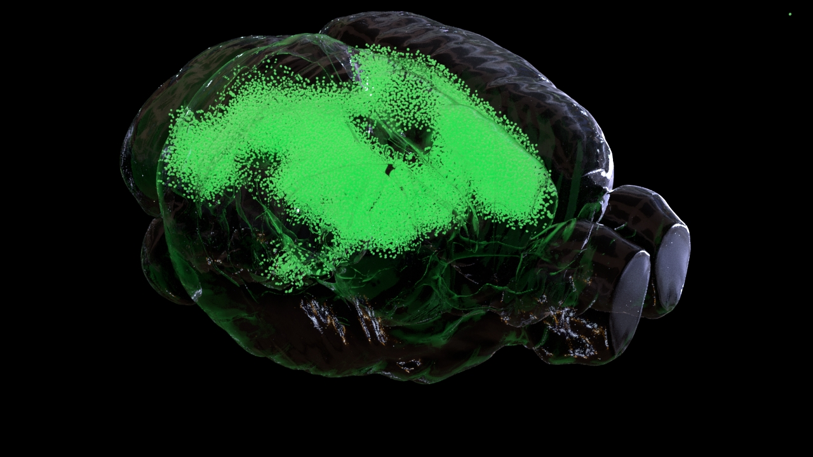
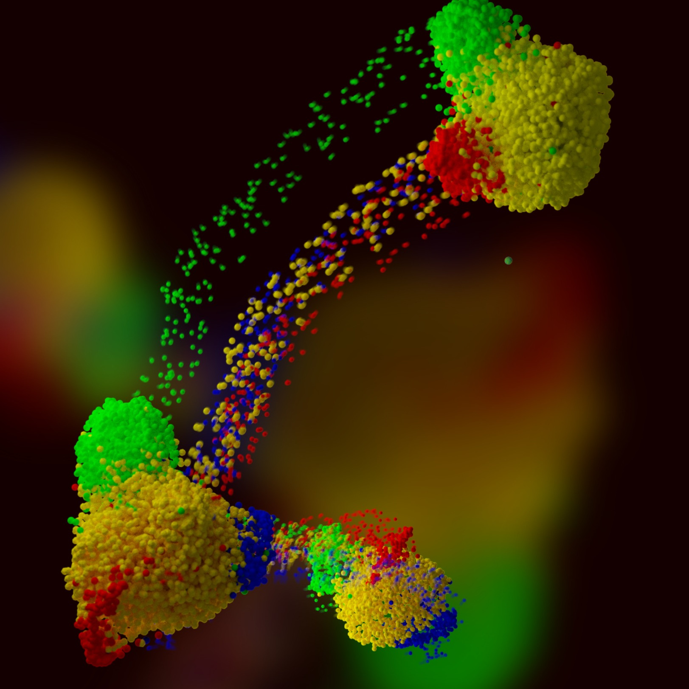
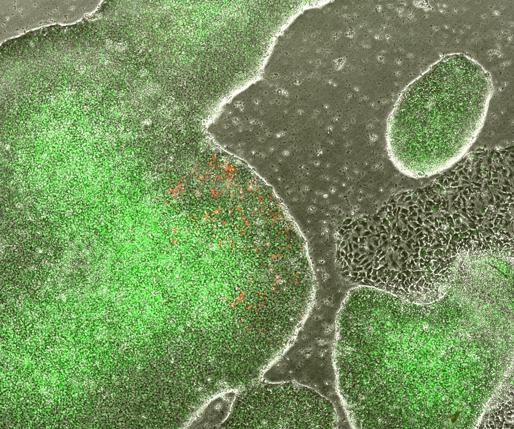
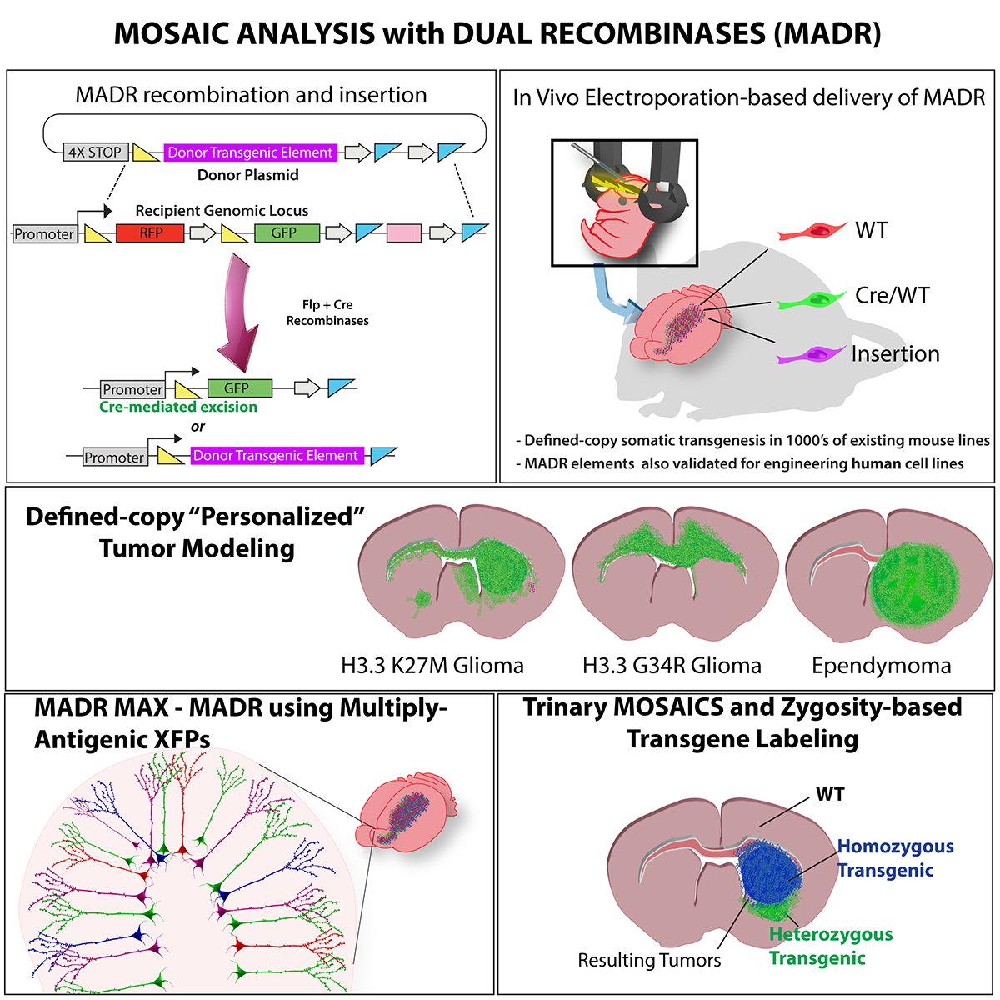
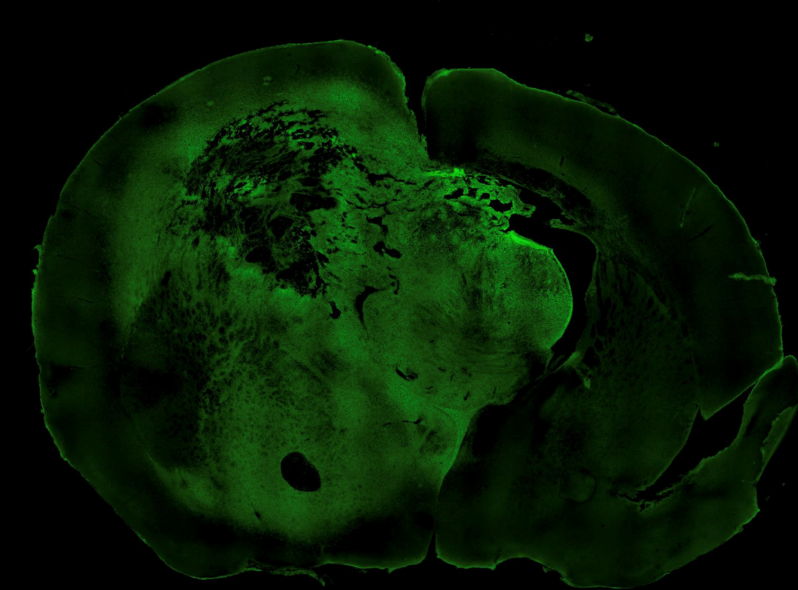

Neural Development
Investigating how neural stem cells establish identity and generate the developing nervous system.
We develop and apply genetic, genomic, and spatial technologies to investigate neural development, brain tumors, and regenerative medicine.
EXPLORE OUR RESEARCH →
Investigating how neural stem cells establish identity and generate the developing nervous system.

Building experimental models to study tumor initiation, progression, and therapeutic vulnerabilities.
Read our mEGFRvIII glioblastoma study ↗
Resolving cellular states, relationships, and tissue organization with high-dimensional data.

Exploring human stem-cell systems and programmable engineering of neural model systems.
Our laboratory develops and applies MADR-based somatic genome engineering, genetically engineered model systems, and single-cell technologies to connect mechanism with function.
Read the original MADR paper (Cell, 2019) ↗MADR graphical abstract · Breunig Lab


Our 2026 Cancer Research study on a syngeneic murine glioma model advances genetically engineered experimental models for investigating glioblastoma biology and supporting therapeutic discovery.
Representative coronal brain section from the lab’s mEGFRvIII glioma model, showing green fluorescence in tumor-bearing tissue.
Read the published Cancer Research paper ↗